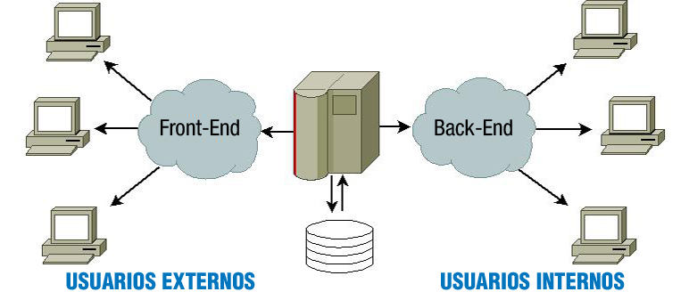

El éxito de lnternet está absolutamente ligado a la web. Tanto que hoy en día para la inmensa mayoría de las personas es indistinguible qué es la web y qué es Internet. Todo se hace en la web.
Las tareas que antes requerían el uso de protocolos distintos a HTTP, como el correo electrónico, los grupos de debate, chats... Ahora se realizan mediante servicios accesibles desde el protocolo HTTP, usando un cliente de navegación web.
Las razones para el éxito absoluto de la web son:
- Su manejo es sencillo.
- Es muy visual.
- Solo necesitamos un único software, el navegador.
La web parece el servicio definitivo, pero también tiene sus inconvenientes. A medida que las páginas se hacen más complejas, se requiere en el navegador más componentes (plugins) para poder verlas bien.
Componentes como la máquina virtual de java o un intérprete veloz de ]avaScript, pasan a ser imprescindibles y hacen que el navegador sea un software cada vez más complejo que exige al usuario la instalación esos componentes para disfrutar adecuadamente de los contenidos.
En todo caso el problema de los plugins ha pasado a ser un problema menor, ya que los navegadores ya suelen traer hoy en día los plugins mínimos necesarios y los creadores de aplicaciones web se adaptan a esos mínimos.
En la actualidad solo el mundo de las apps en los dispositivos móviles parece arrojar alguna competencia al éxito de las aplicaciones web.
Las aplicaciones web emplean páginas web dinámicas para crear aplicaciones que se ejecuten en un servidor web y se muestren en un navegador. Puedes encontrar aplicaciones web para realizar múltiples tareas. Unas de las primeras en aparecer fueron las que viste antes, los clientes de correo, que te permiten consultar los mensajes de correo recibidos y enviar los tuyos propios utilizando un navegador.
Hoy en día existen aplicaciones web para multitud de tareas como procesadores de texto, gestión de tareas, o edición y almacenamiento de imágenes. Estas aplicaciones tienen ciertas ventajas e inconvenientes si las comparas con las aplicaciones tradicionales que se ejecutan sobre el sistema operativo de la propia máquina.
Ventajas de las aplicaciones web:
- No es necesario instalarlas en aquellos equipos en que se vayan a utilizar. Se instalan y se ejecutan solamente en un equipo, en el servidor, y esto es suficiente para que se puedan utilizar de forma simultánea desde muchos equipos.
- Como solo se encuentran instaladas en un equipo, es muy sencillo gestionarlas (hacer copias de seguridad de sus datos, corregir errores, actualizarlas).
- Se pueden utilizar en todos aquellos sistemas que dispongan de un navegador web, independientemente de sus características (no es necesario un equipo potente) o de su sistema operativo.
- Se pueden utilizar desde cualquier lugar en el que dispongamos de conexión con el servidor. En muchos casos esto hace posible que se pueda acceder a las aplicaciones desde sistemas no convencionales, como por ejemplo teléfonos móviles.
Inconvenientes de las aplicaciones web:
- El interface de usuario de las aplicaciones web es la página que se muestra en el navegador. Esto restringe las características del interface a aquellas de una página web.
- Dependemos de una conexión con el servidor para poder utilizarlas. Si nos falla la conexión, no podremos acceder a la aplicación web.
- La información que se muestra en el navegador debe transmitirse desde el servidor. Esto hace que cierto tipo de aplicaciones no sean adecuadas para su implementación como aplicación web (por ejemplo, las aplicaciones que manejan contenido multimedia, como las de edición de vídeo).
Hoy en día muchas aplicaciones web utilizan las ventajas que les ofrece la generación de páginas dinámicas. La gran mayoría de su contenido está almacenado en una base de datos. Aplicaciones como WordPress, Drupal, Joomla! y otras muchas ofrecen dos partes bien diferenciadas:
- Una parte externa o Front-End, que es el conjunto de páginas que ven la gran mayoría de usuarios que las usan (usuarios externos).
- Una parte interna o Back-End, que es otro conjunto de páginas dinámicas que utilizan las personas que producen el contenido y las que administran la aplicación web (usuarios internos) para crear contenido, organizarlo, decidir la apariencia externa, etc.
